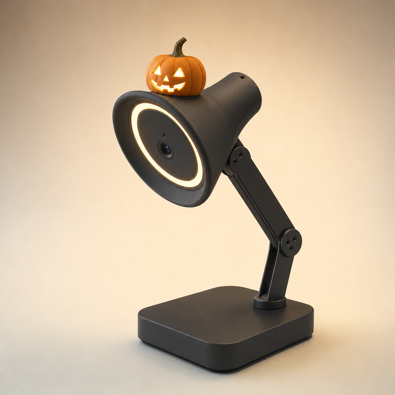
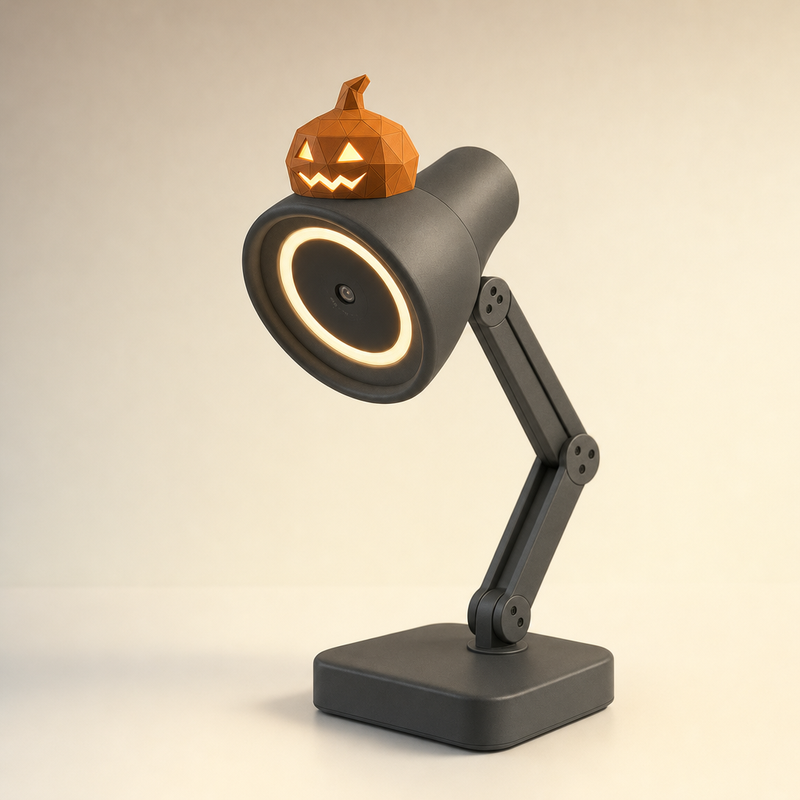
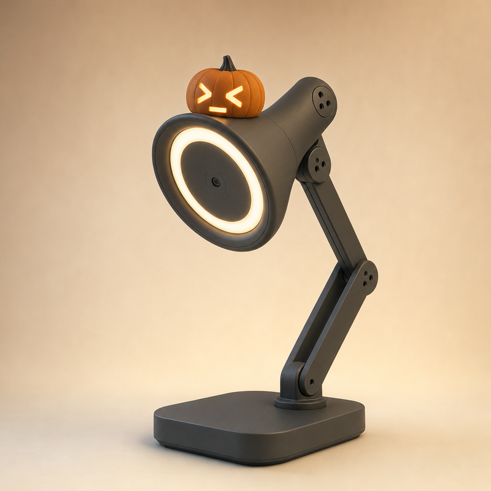
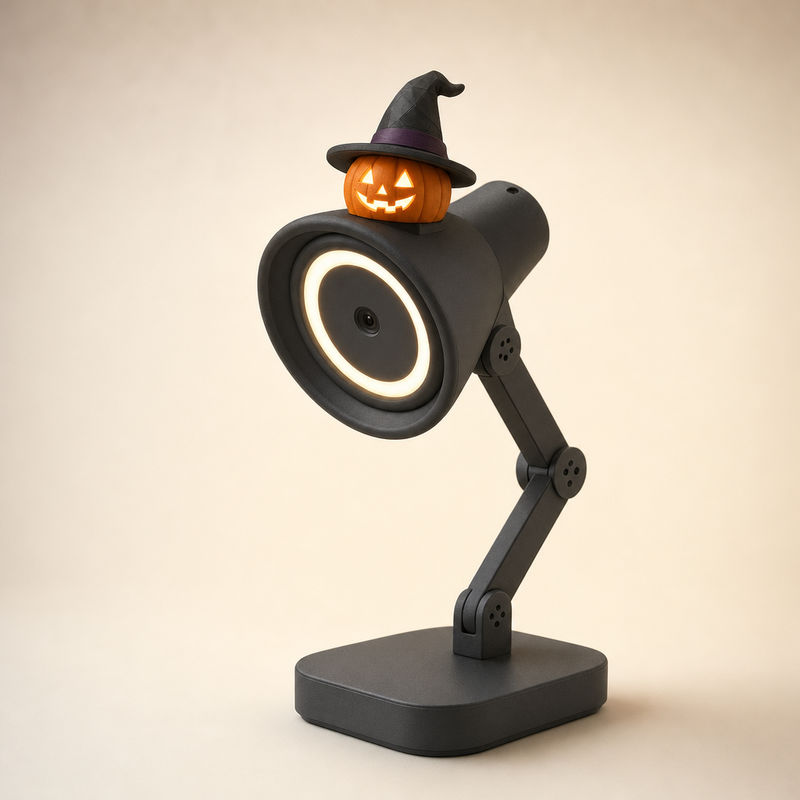
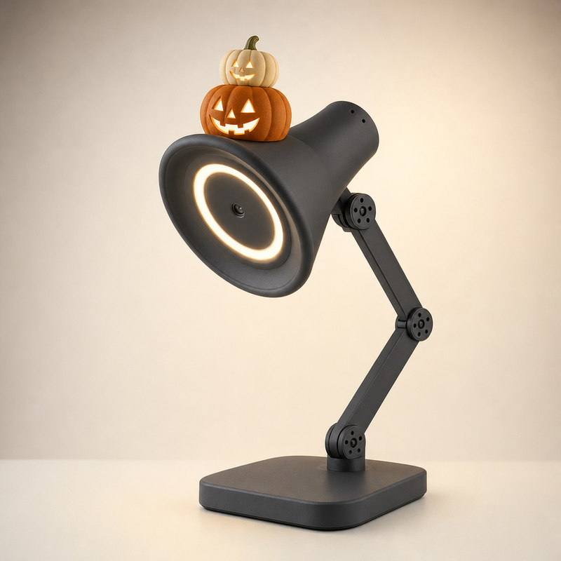
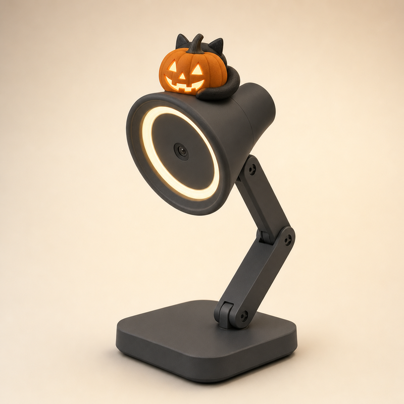
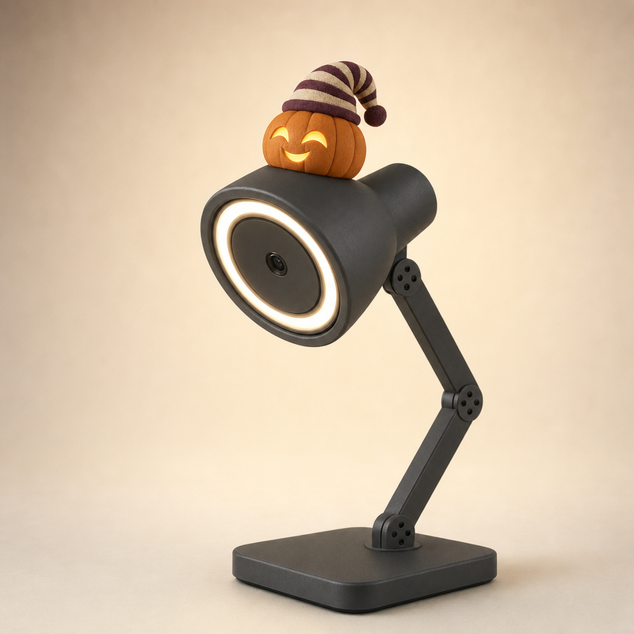
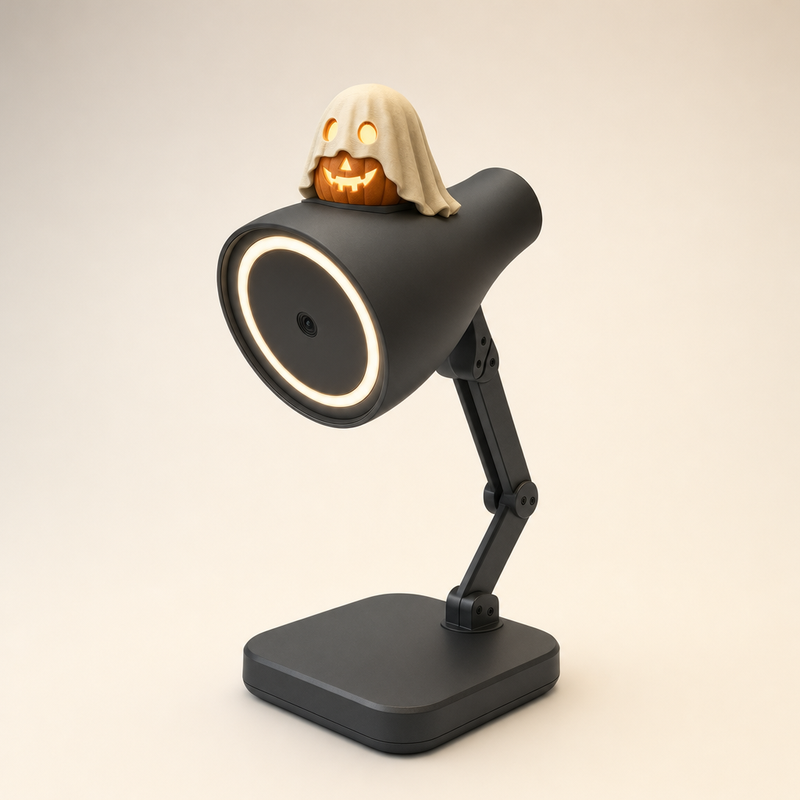

<title>Lamp Pumpkin Hats</title>
<link rel="stylesheet" href="https://fonts.googleapis.com/css2?family=Bricolage+Grotesque:wght@600;700&family=Figtree:wght@400;500&display=swap">
<style>
/* Layout: one column of rounds, newest first; each round is a 4-up grid of square photo cards */
:root{--bg:#f4f2ef;--fg:#1c1b1f;--muted:#68646d;--card:#ffffff;--line:#e2dee6;--flaw:#a3321f;--chosen:#1f6b45;--chosen-fg:#ffffff;
--display:"Bricolage Grotesque",system-ui,sans-serif;--body:"Figtree",system-ui,sans-serif}
@media (prefers-color-scheme:dark){:root:not([data-theme="light"]){--bg:#141316;--fg:#efedf2;--muted:#a19ca8;--card:#1e1d21;--line:#322f37;--flaw:#f08a74;--chosen:#6fd3a0;--chosen-fg:#0e1f16;color-scheme:dark}}
:root[data-theme="dark"]{--bg:#141316;--fg:#efedf2;--muted:#a19ca8;--card:#1e1d21;--line:#322f37;--flaw:#f08a74;--chosen:#6fd3a0;--chosen-fg:#0e1f16;color-scheme:dark}
body{background:var(--bg);color:var(--fg);font:15px/1.5 var(--body)}
main{max-width:1240px;margin:0 auto;padding-block:28px 48px;padding-inline:16px;display:grid;gap:36px}
header h1{font:700 28px/1.15 var(--display);margin:0;text-wrap:balance}
header p{color:var(--muted);margin:6px 0 0;max-width:65ch}
section{display:grid;gap:14px}
h2{font:600 18px/1.3 var(--display);margin:0}
h2 small{font:400 14px var(--body);color:var(--muted);margin-left:8px}
.grid{display:grid;grid-template-columns:repeat(auto-fill,minmax(250px,1fr));gap:14px}
figure{margin:0;background:var(--card);border:1px solid var(--line);border-radius:10px;overflow:hidden;display:flex;flex-direction:column}
figure img{width:100%;max-width:100%;aspect-ratio:1;object-fit:cover;display:block}
figcaption{padding:10px 12px 12px;display:grid;gap:2px;min-width:0}
figcaption b{font:600 15px var(--display)}
figcaption span{color:var(--muted);font-size:13.5px}
figcaption .sz{font-size:12px;letter-spacing:.02em}
figcaption .flaw{color:var(--flaw)}
.rec{justify-self:start;font:600 11.5px var(--body);letter-spacing:.04em;text-transform:uppercase;color:var(--chosen-fg);background:var(--chosen);padding:2px 8px;border-radius:99px}
figure.chosen{border-color:var(--chosen)}
</style>
<main>
<main>
<header><h1>Mũ bí ngô Halloween cho Lamp</h1>
<p>Mũ bí ngô rỗng in PLA trùm lên module vuông (14 × 25 × 20 mm) trên đỉnh chụp đèn, ngay sau mép trước, theo file <code>Head_dock.step</code>. Mặt khoét thủng nhìn về phía trước và không che vòng LED hay camera. Ảnh vẽ mặt phát sáng như có đèn nhỏ bên trong mũ; module hiện chưa có đèn. Vòng mới nhất ở trên cùng.</p></header>
<section><h2>Vòng 1: ba mẫu chuyển từ Intern (N1–N3) và năm mẫu mới không theo tech (N4–N8) <small>N1–N8</small></h2><div class="grid">
<figure><figcaption><b>N1 Classic Jack</b><span class="sz">Mũ rỗng ~50–60 mm, trùm kín module</span><span>Từ J1 của Intern: bí ngô cam có múi, mắt mũi tam giác, miệng răng cưa</span></figcaption></figure>
<figure><figcaption><b>N2 Low-poly</b><span class="sz">Mũ rỗng ~50–60 mm, trùm kín module</span><span>Từ G4 của Intern: bí ngô low-poly ghép từ mặt tam giác</span><span class="flaw">Lỗi ảnh: mặt khoét sáng mờ, khó thấy</span></figcaption></figure>
<figure><figcaption><b>N3 Terminal Face</b><span class="sz">Mũ rỗng ~50–60 mm, trùm kín module</span><span>Từ G6 của Intern: mắt hình &gt; và &lt;, miệng là con trỏ gạch dưới</span></figcaption></figure>
<figure><figcaption><b>N4 Witch Pumpkin</b><span class="sz">Mũ rỗng ~50–60 mm, trùm kín module</span><span>Bí ngô nhỏ đội mũ phù thủy đen vành rộng, chóp gập mềm, đai màu mận</span><span class="flaw">Lỗi ảnh: nằm lùi về giữa chụp đèn; mũ phù thủy làm tổng chiều cao gần 80 mm</span></figcaption></figure>
<figure><figcaption><b>N5 Stacked Pumpkins</b><span class="sz">Mũ rỗng ~50–60 mm, trùm kín module</span><span>Hai quả bí chồng lên nhau: quả cam to có mặt khoét, quả kem nhỏ ở trên</span></figcaption></figure>
<figure><figcaption><b>N6 Black Cat</b><span class="sz">Mũ rỗng ~50–60 mm, trùm kín module</span><span>Mèo đen cuộn tròn sau quả bí, chỉ thấy hai tai và đuôi, không có mặt mèo</span></figcaption></figure>
<figure><figcaption><b>N7 Sleepy Pumpkin</b><span class="sz">Mũ rỗng ~50–60 mm, trùm kín module</span><span>Bí ngô buồn ngủ, mắt nhắm cong, đội mũ ngủ sọc mận và kem</span></figcaption></figure>
<figure><figcaption><b>N8 Ghost Sheet</b><span class="sz">Mũ rỗng ~50–60 mm, trùm kín module</span><span>Bí ngô trùm nửa tấm khăn ma màu kem, mắt sáng qua hai lỗ trên khăn</span><span class="flaw">Lỗi ảnh: nằm lùi về giữa chụp đèn, không sát mép trước</span></figcaption></figure>
</div></section></main>
